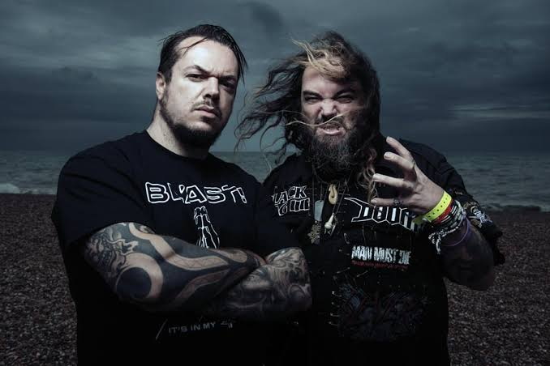
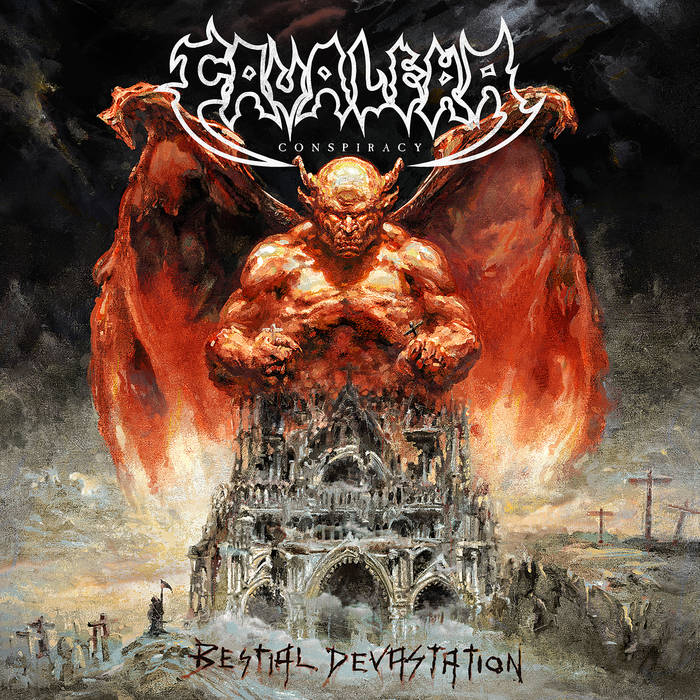

The Cavaleras

Cavalera Conspiracy is a project shared by the brothers Max and Igor Cavalera.
Cavalera Conspiracy's Official SiteAlbums
Cavalera Conspiracy has four studio albums. They have also re-recorded some of their earlier Sepultura material.
- Inflikted (2008)
- Blunt Force Trauma (2011)
- Pandemonium (2014)
- Psychosis (2017)
